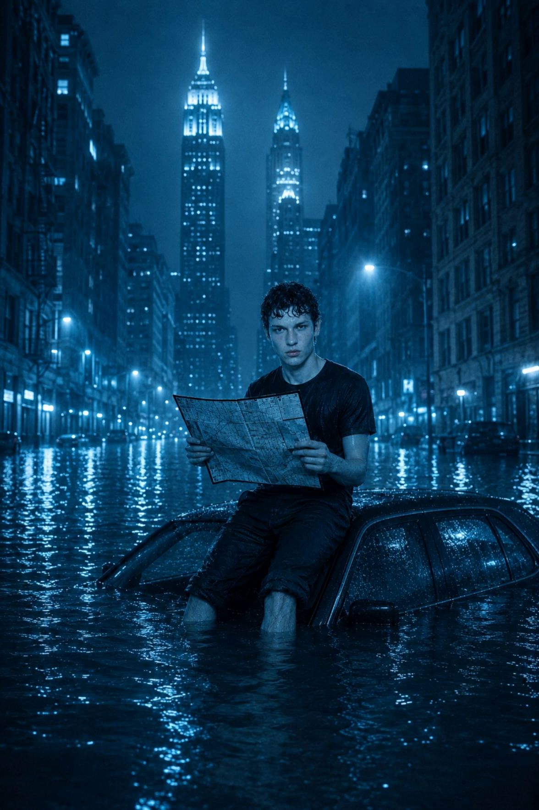

A 3-scene vertical anime episode, deconstructed so a brand can see exactly what they're paying for. Three shots, one QA gate per shot, one full frame extraction set per shot.
This episode shipped 4 July 2026 as the first end-to-end run of the seed blueprint (this page) that became the luxury blueprint (see the blueprint page). Three scenes, each with three frames extracted at t=0%, t=50%, t=98% of duration. One QA gate per scene. ~3 minute total runtime. One writer, one QA system, one set of kie.ai generation calls — visible below.
Output: 3 MP4 scenes (s1_establish, s2_deepen, s3_exit), 9 frames total (3 per scene), 1 QA JSON file with all 9 vs-seed and vs-hero similarity scores.
Source files: /home/newtazer/Desktop/NCI/2ND/newtazer/products/ep_speedmaster/

| Frame | vs-seed | vs-hero | Status |
|---|---|---|---|
| f00 (t=0%) | 0.3248 | 0.3175 | PASS |
| f50 (t=50%) | 0.3244 | 0.3158 | PASS |
| f98 (t=98%) | 0.3292 | 0.3202 | PASS |
| Frame | vs-seed | vs-hero | Status |
|---|---|---|---|
| f00 | 0.3352 | 0.3266 | PASS |
| f50 | 0.3531 | 0.3460 | PASS (drift within tolerance) |
| f98 | 0.3692 | 0.3617 | PASS (drift within tolerance) |
| Frame | vs-seed | vs-hero | Status |
|---|---|---|---|
| f00 | 0.2314 | 0.2302 | PASS |
| f50 | 0.2276 | 0.2260 | PASS |
| f98 | 0.2111 | 0.2130 | PASS |
Every scene was measured against two reference images using the same gate that runs on every frame in every batch — qa_selector.py (ResNet50 cosine similarity, threshold M16.8–16.9 calibrated on a reference bank held out from the active training run).
The pass/fail criterion is: both vs-seed and vs-hero stay within the calibrated band for the scene type. Catastrophic divergence triggers an automatic regenerate; stylistic drift within tolerance does not. See the blueprint page for the full gate logic, the regeneration budget, and the calibrated thresholds.
{
"s1_establish": [
{"pos": 0.00, "vs_seed": 0.3248, "vs_hero": 0.3175},
{"pos": 0.50, "vs_seed": 0.3244, "vs_hero": 0.3158},
{"pos": 0.98, "vs_seed": 0.3292, "vs_hero": 0.3202}
],
"s2_deepen": [
{"pos": 0.00, "vs_seed": 0.3352, "vs_hero": 0.3266},
{"pos": 0.50, "vs_seed": 0.3531, "vs_hero": 0.3460},
{"pos": 0.98, "vs_seed": 0.3692, "vs_hero": 0.3617}
],
"s3_exit": [
{"pos": 0.00, "vs_seed": 0.2314, "vs_hero": 0.2302},
{"pos": 0.50, "vs_seed": 0.2276, "vs_hero": 0.2260},
{"pos": 0.98, "vs_seed": 0.2111, "vs_hero": 0.2130}
]
}
The brand receives three video files and a single QA report. They do not see the prompts, the regeneration logic, or the threshold tuning. That's the whole point of the gate — the brand signs off on "the character looks like the character", not on the mechanism that ensures it.
For brands that want to see the mechanism — to verify the work is auditable, not just trusted — this page is the entry. The full production system is documented in the blueprint; the higher-end version (the luxury tier that adds a four-ward expert routing panel, an AIDM Thompson-sampling credit allocator, and an EEAI leakage audit) is on the same blueprint at the luxury tier.